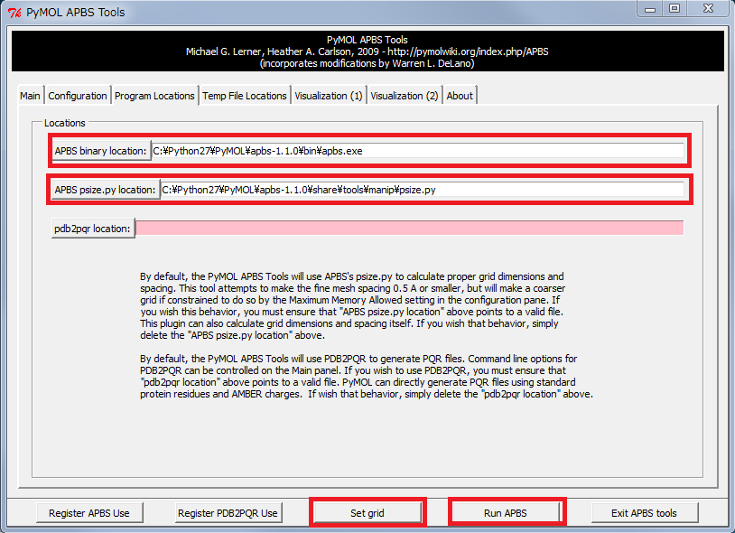

PyMOL tutorial | Electrostatic potential
English version of Japanese website about structural biology
Home > PyMOL > Electrostatic potential
Installation of APBS
By using PyMOL plugin "APBS", I'll show you how to display electrostatic potential from pdb file.- Access the Download page, and download "apbs-1.1.0-Windows.zip"
- Extract the zip file at PyMOL folder
PDB file to PQR file
- Access PDB2PQR Server
- Upload PDB file or enter PDB ID
- Click "submit" ↓scroll down
- Download "****.pqr"

APBS tools
- Open PDB file in PyMOL
- Plugin → APBS tools
- Setting IN "Main" tab...
- Display When the calculation is finished...
Check "Use another PQR"
Click "Choose Externally Generated" to select PQR file.
IN "APBS Location" tab
Click "APBS binary location" and "APBS psize.py location" to "select apbs.exe" and "psize.py"
| APBS binary location | apbs-1.1.0\bin\apbs.exe |
| APBS psize.py location | apbs-1.1.0\share\tools\manip\psize.py |
Click "Set grid"
↓
Click "Run APBS"

1.Uncheck "solvent accessible surface"
2.Adjust the number of Low, Middle, High
3.Click "Show"